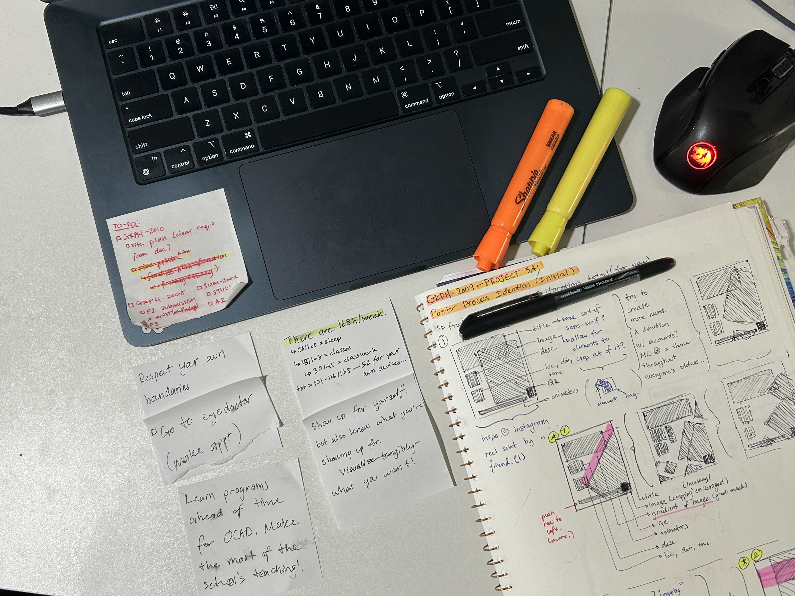

Scale
Contrast
Face
Color
Contrast
Background Color
completed
Achievement 1: Set body type contrast to bold
completed
Achievement 2: Set website contrast to low
completed
Achievement 3: Set body type color to light
by Michael M.
Sections:
Introduction
Options Menu

Whenever I talk to others, I tend to see that they view time management skills as something inherit to certain modes of thinking, something that is simply out of their reach, or something that they find difficulty in justifying its self-done intentional development. However, from my own (flawed, but passionate) experience, I find that time management, as a general idea, proves to be more accessible than people make it out to be, placing emphasis on the “hows” and “whys” of how one chooses to manage parts of their time.
This website, "Michael's Management", is not only meant to be an archive of thoughts and resources I find helpful to consume in thinking about time management, but it is also meant to be a tool for you—the visitor—to both use and take something away from. My website is built around the (self-dubbed) idea of “open navigation”—the idea that you are free to read however much of the website’s content you wish in whatever order you desire, so I implore you to follow your curiosity or modes of thinking to wherever they lead you. It’s difficult to lineally talk and think about time management in a consistently successful way for everybody, so, for your sake and mine, I encourage you to be open about the ways you absorb information.
One of the ways you can explore your processes of learning is by accessing the website’s “Options” tab, from which you will be presented with three menus, each serving a different website-wide function.
The first menu item, labelled “Accessibility”, allows you to have control over specific parts of the website’s structure, allowing you to change elements of the text, like its scale, as well as elements of the website, like its background color. I implore you to change parts of the website to better suit your information-gathering needs.
The second menu item, labelled “Navigation”, provides the list of external resources I have included within my writing, sorted as presented by the website. You’ll be prompted to visit these resources within my text so you choose, so feel no pressure to look at the whole menu right away. You may also navigate to any point in my website as you please; I encourage checking the menu if your mind drifts to topics you think are adjacent to the writing you read.
The third menu item, labelled "Achievements", directly correlates with the Accessibility menu. If you don't want to use the Accessibility menu to change parts of the website, let this option be a motivator to do so. Who knows, you might even find new visual preferences or learn new terms!
All the content I provide within this website—external or internal—are free-to access or are provided with budgetary considerations in mind. I intend for this website to be of universal access—its resources, lessons, and reflections should be accessible for as many users as possible, and you, dear reader, are one of them. Take advantage of all this website has to offer as it is designed to help you follow your own trains-of-thinking, hopefully teaching you a thing or two about time management along the way.
This website has two “sides” to itself—the “informational”, focusing on the a-physical—theory, practices, and opinions—and the “practical”, focusing on physical media, tool specificity, and purchasing considerations. Please choose what you feel would best suit your need.